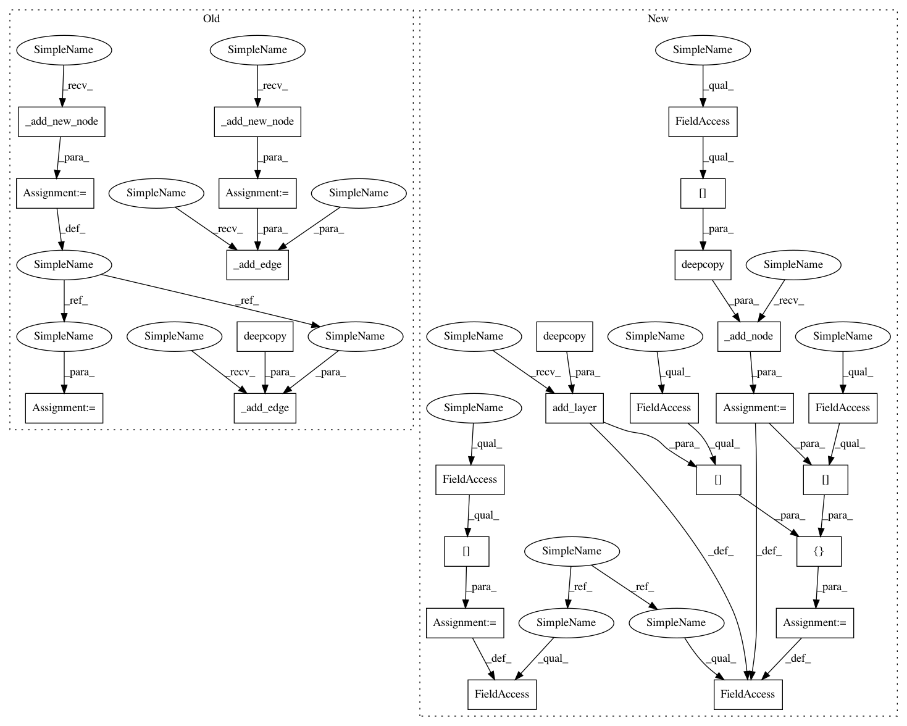

5b3af9ff43bc61f8034f1202a2b57f21c8ee3771,autokeras/graph.py,Graph,to_concat_skip_model,#Graph#Any#Any#,423
Before Change
skip_output_id = conv_block_input_id
for index, layer_id in enumerate(pooling_layer_list):
layer = self.layer_list[layer_id]
new_node_id = self._add_new_node()
self._add_edge(deepcopy(layer), skip_output_id, new_node_id)
skip_output_id = new_node_id
// Add the concatenate layer.
new_node_id = self._add_new_node()
layer = StubConcatenate()
new_node_id2 = self._add_new_node()
layer2 = StubConv(self.layer_list[start_id].filters + self.layer_list[end_id].filters,
self.layer_list[end_id].filters, 1)
if self.weighted:
filters_end = self.layer_list[end_id].filters
filters_start = self.layer_list[start_id].filters
filter_shape = (1,) * (len(self.layer_list[end_id].get_weights()[0].shape) - 2)
weights = np.zeros((filters_end, filters_end) + filter_shape)
for i in range(filters_end):
filter_weight = np.zeros((filters_end,) + filter_shape)
filter_weight[(i, 0, 0)] = 1
weights[i, ...] = filter_weight
weights = np.concatenate((weights,
np.zeros((filters_end, filters_start) + filter_shape)), axis=1)
bias = np.zeros(filters_end)
layer2.set_weights((add_noise(weights, np.array([0, 1])), add_noise(bias, np.array([0, 1]))))
dropout_output_id = self.adj_list[dropout_input_id][0][0]
self._redirect_edge(dropout_input_id, dropout_output_id, new_node_id)
self._add_edge(layer, new_node_id, new_node_id2)
self._add_edge(layer, skip_output_id, new_node_id2)
self._add_edge(layer2, new_node_id2, dropout_output_id)
// // Widen the related layers.
After Change
pooling_layer_list = self._get_pooling_layers(conv_block_input_id, dropout_input_id)
skip_output_id = conv_block_input_id
for index, layer_id in enumerate(pooling_layer_list):
skip_output_id = self.add_layer(deepcopy(self.layer_list[layer_id]), skip_output_id)
// Add the concatenate layer.
new_conv_layer = StubConv(self.layer_list[start_id].filters + self.layer_list[end_id].filters,
self.layer_list[end_id].filters, 1)
dropout_output_id = self.adj_list[dropout_input_id][0][0]
concat_input_node_id = self._add_node(deepcopy(self.node_list[dropout_output_id]))
self._redirect_edge(dropout_input_id, dropout_output_id, concat_input_node_id)
concat_layer = StubConcatenate()
concat_layer.input = [self.node_list[concat_input_node_id], self.node_list[skip_output_id]]
concat_output_node_id = self._add_node(Node(concat_layer.output_shape))
self._add_edge(concat_layer, concat_input_node_id, concat_output_node_id)
self._add_edge(concat_layer, skip_output_id, concat_output_node_id)
concat_layer.output = self.node_list[concat_output_node_id]
self.node_list[concat_output_node_id].shape = concat_layer.output_shape
self._add_edge(new_conv_layer, concat_output_node_id, dropout_output_id)
new_conv_layer.input = self.node_list[concat_output_node_id]
In pattern: SUPERPATTERN
Frequency: 4
Non-data size: 26
Instances
Project Name: keras-team/autokeras
Commit Name: 5b3af9ff43bc61f8034f1202a2b57f21c8ee3771
Time: 2018-08-01
Author: jin@tamu.edu
File Name: autokeras/graph.py
Class Name: Graph
Method Name: to_concat_skip_model
Project Name: keras-team/autokeras
Commit Name: 5b3af9ff43bc61f8034f1202a2b57f21c8ee3771
Time: 2018-08-01
Author: jin@tamu.edu
File Name: autokeras/graph.py
Class Name: Graph
Method Name: to_add_skip_model
Project Name: keras-team/autokeras
Commit Name: 5b3af9ff43bc61f8034f1202a2b57f21c8ee3771
Time: 2018-08-01
Author: jin@tamu.edu
File Name: autokeras/graph.py
Class Name: Graph
Method Name: to_concat_skip_model